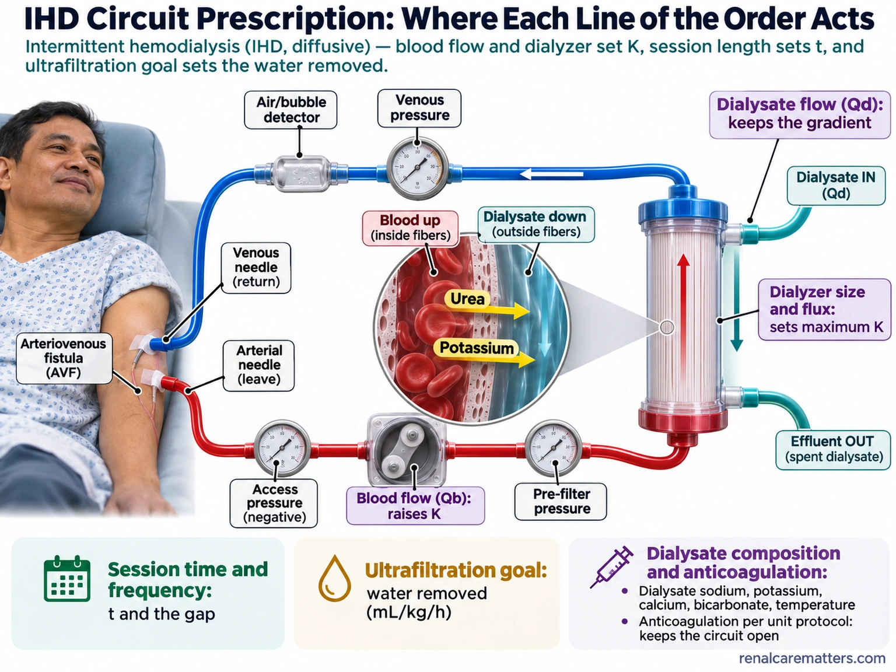
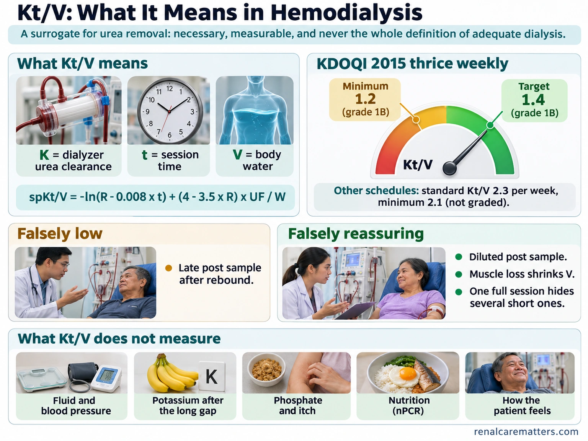

Read and write a hemodialysis prescription, interpret Kt/V and URR, and set safe ultrafiltration.
PublishedNailathalaGipatikPepalwal:ReferencesMga SanggunianMga TinubdanReng Reperensya:12Audience: Adult and pediatric nephrology fellows · internal medicine and pediatric residents · medical interns on medicine, pediatrics, ICU and dialysis rotations, and residents who work shifts as dialysis physicians on dutyRead timeOras ng pagbasaOras sa pagbasaOras ning pamamasa:
Training track for nephrology fellows, residents and medical interns
Study material for medical interns, residents and fellows. It explains the reasoning behind common decisions; it is not a protocol and gives no drug doses. Doses, rates and order sets come from current guidelines, product labels, your institution’s approved protocols and your supervising physician. Benefit rules change: confirm them on the date of service. Every case is fictional.
Learning objectives
After this module you should be able to
Intern: Name the parts of a hemodialysis order (time, frequency, blood flow, dialysate flow, dialyzer, dialysate and ultrafiltration goal) and report a patient who misses, shortens or cannot tolerate sessions.
Resident: Read a dialysis order and interpret a urea reduction ratio (URR) or Kt/V, including the reasons a result may be falsely low or falsely reassuring, and calculate an ultrafiltration rate.
Fellow: Write and adjust a prescription (time, flows, dialyzer, dialysate, ultrafiltration and hemodiafiltration), and use residual kidney function to decide on incremental or twice-weekly hemodialysis honestly within Philippine cost limits.
Pre-testBefore you read, answer the 5 self-assessment questions and note your score. After the module, select New set of questions and compare. The difference is what you learned; the questions you still miss are what to reread.
Start here
The big picture, in plain words
Your role · reader, checker, prescriberThe intern reads the order aloud at
handoff, knows what each line means, and reports the patient who missed a session or left early. The resident checks that the order
matches the patient in the chair: the access, the weight, the potassium, the last Kt/V. The fellow writes and changes the prescription
with the attending nephrologist, and explains the dose to the patient and the family in pesos and in hours, not only in numbers.
In plain wordsPicture a cloudy aquarium with a filter pump. How clean the water gets depends on three things: how fast the pump moves water
through the filter, how long it runs, and how big the tank is. Run a small pump for a short time in a big tank, and the water stays
cloudy. Hemodialysis works the same way. The dialyzer is the filter, the blood pump and dialysate set its speed, the session length is the
time, and the patient’s body water is the tank.
The picture has a limit. The body is not one tank. Urea sits in the blood, in the spaces between cells and inside cells, especially
muscle, and it moves between these spaces slowly. The blood is cleaned fast; the cells give up their urea late, so the level rebounds after
the session ends. Urea is also only a marker. It is small, it crosses the membrane easily, and it is not the toxin that makes patients
sick. Larger “middle molecules” such as beta-2 microglobulin move poorly by diffusion and better by convection. And the filter is
only half the job. The machine must also remove the water the patient drank since the last session, and water removal has its own speed
limit, set by how fast the tissues refill the blood vessels. A session can clean urea perfectly and still leave a patient breathless or
hypotensive.
Schedules other
than thrice weekly (KDOQI 2015)Standard Kt/V target 2.3 per week, minimum 2.1, counting ultrafiltration and residual function (not graded)
Session
length with residual function under 2 mL/min (KDOQI 2015)A bare minimum of 3 hours, thrice weekly (1D)
HEMO trial, 1,846
patientsHigher dose (equilibrated Kt/V 1.53 vs 1.16) did not lower mortality (relative risk 0.96)
Comparison of high-dose hemodiafiltration (HDF) with high-flux hemodialysis (HD) trial (CONVINCE) trial, 1,360
patientsDeath 17.3% with high-dose hemodiafiltration vs 21.9% with high-flux hemodialysis, median 30 months
Philippine Health Insurance Corporation (PhilHealth) hemodialysis
benefitUp to 156 sessions a year at PHP 6,350 per session for patients in the PhilHealth Dialysis Database (from October 9, 2024; confirm on
the date of service)
Most patients on maintenance hemodialysis in a Philippine unit do well on an ordinary prescription that is actually delivered: full time,
the blood flow the access can give, a high-flux dialyzer and a fluid goal the patient can tolerate. A few are underdialyzed without anyone
noticing, because the Kt/V was drawn wrong, the sessions are short, the catheter recirculates, or the schedule is twice weekly in a patient
who no longer makes urine. Your work is to read the numbers for what they measure, find the gap between the prescribed and the delivered
dose, and write a prescription the patient can live with.
Opening case · fictional
Case: Twice a week since 2019
It is Tuesday at 10 a.m. in a freestanding hemodialysis unit in San Fernando, Pampanga. Mr. Rogelio Pangilinan, 61, a retired
jeepney dispatcher with diabetes, has dialyzed twice a week, Tuesday and Friday, for four hours, through a left radiocephalic fistula since
2019. The family chose twice weekly because they paid for most sessions themselves. He now passes about a cup of urine a day.
His dry weight is recorded as 62 kg. He arrived today 3.8 kg above it, with a blood pressure of 172/96 mm Hg, crackles at both lung bases
and ankle edema. Pre-dialysis potassium last month was 5.9 mmol/L. He scratches his forearms and says Tuesdays are “the hard
days.” Last month’s single-pool Kt/V, computed from the unit’s pre- and post-dialysis urea, was 1.0. The flow sheet shows that
the blood pump ran at the prescribed speed but that two of the last eight sessions ended 30 minutes early because of cramps.
His daughter, an overseas Filipino worker home for two weeks, tells you he was registered in the PhilHealth Dialysis Database last month.
She asks the fellow and you, the resident on the renal rotation, whether he can now come three times a week, and whether that will help.
Before reading on, decide:
What does a Kt/V of 1.0 on a twice-weekly schedule mean for Mr. Pangilinan, and what could make it falsely low or falsely reassuring?
What do his weight gains do to his ultrafiltration rate, and what would you change in the session?
What will you propose to the attending nephrologist and the family about frequency now that the benefit covers up to 156 sessions?
Keep your answers in mind. The lesson gives you what you need, and the case review near the end shows one sound response.
Lesson · part 1
Kinetics: what K, t and V really measure
Dialysis clears solutes by two mechanisms. In diffusion, a solute moves from high to low concentration across the
membrane, from blood into dialysate. Small molecules such as urea and potassium diffuse quickly; large ones barely move. In
convection, water is pushed across the membrane by pressure and carries dissolved solutes with it, small and middle-sized
alike. Conventional hemodialysis is mostly diffusion with a little convection from ultrafiltration. Hemodiafiltration adds large-volume
convection.
Kt/V describes the diffusive clearance of urea for one session. K is the dialyzer’s urea clearance in milliliters per
minute. It rises with blood flow, with dialysate flow and with the size and permeability of the dialyzer, but each step gives less than the
one before, because the membrane can only move so much urea per minute. t is the time the blood actually passed through the
dialyzer. V is the volume in which urea is distributed, roughly total body water. Kt/V is therefore a ratio: how many times
the patient’s body water was cleared of urea in one session.
In practice nobody measures K, t and V separately. The unit draws blood urea before and after the session and uses the fall. The urea
reduction ratio (URR) is the percentage fall. Single-pool Kt/V (spKt/V) corrects the fall for urea generated during the session and for the
water removed, because a patient who loses fluid shrinks V and would otherwise look better cleaned. Daugirdas’ second-generation
formula is the bedside standard.1
Arithmetic illustration, not a target. spKt/V = −ln(R − 0.008 × t) + (4 − 3.5 × R) × UF ÷ W, where
R = post-dialysis urea ÷ pre-dialysis urea, t = session length in hours, UF = fluid removed in liters, W = post-dialysis weight in kg.
Pre-urea 30 mmol/L, post-urea 12 mmol/L (R = 0.40), 4 hours, 3 L removed, 62 kg: spKt/V is about 1.00 + 0.13 = 1.13.
The single-pool model assumes one tank. The body is several. During the session, urea leaves the blood faster than it can leave the
cells, so the post-dialysis blood sample catches a falsely low level. Within the next 30 to 60 minutes urea flows back from cells into
blood and the level rebounds. Equilibrated Kt/V (eKt/V) corrects for this and is lower than spKt/V; the gap is largest in short, intense
sessions. This is the physiology behind the rule that time matters: a long, gentle session gives the cells time to empty.
What goes wrong
Mechanism
How the Kt/V misleads you
What you check
Post-dialysis sample drawn after a delay
Rebound has begun
Falsely low
Timing of the draw per unit protocol
Post sample drawn from a line with dialysate or saline
Sample is diluted
Falsely high
Technique: slow the pump, sample from the arterial line
Access recirculation
Cleaned blood re-enters the arterial needle and is dialyzed again
Delivered clearance falls; may be read as a falsely high fall at the sampling site
Needle placement, access flow, stenosis on examination
Catheter that cannot give the prescribed blood flow
K falls
Truly low
Actual pump speed on the flow sheet, arterial pressure alarms
Sessions shortened for cramps, alarms or transport
t falls
Truly low, and missed on the day the sample was full length
Delivered minutes for every session of the month
Clotted or reused dialyzer with lost surface
K falls
Truly low
Dialyzer condition, reprocessing records
Muscle wasting
V falls, so the same Kt gives a higher Kt/V
Reassuring number in a malnourished patient
Weight trend, albumin, protein intake
What you do at your stage. The intern learns the parts of the order and notices the patient who leaves early. The resident
reads the month’s flow sheets, not only the Kt/V, and compares delivered minutes and blood flow with the order. The fellow asks which of
K, t or V explains a low number before changing anything, because the fix for a failing access is not a bigger dialyzer.
RememberBefore you act on a Kt/V, ask whether it was measured correctly and whether it reflects every session of the month. A good number from
one full session can hide four short ones.

Figure 2. Where each line of the order acts. Blood flow and the dialyzer set K, the session length sets t, and the ultrafiltration goal sets the water removed.
Lesson · part 2
Adequacy: what the trials and KDOQI say, and what Kt/V cannot tell you
In the 1990s, observational data showed that patients with higher urea clearance lived longer, and the natural next question was whether
pushing the dose higher would save more lives. The Hemodialysis (HEMO) Study answered it. It randomized 1,846 patients on thrice-weekly
dialysis, in a two-by-two factorial design, to a standard or a high dose and to a low-flux or a high-flux dialyzer. The standard-dose group
achieved a URR of 66.3%, spKt/V 1.32 and eKt/V 1.16; the high-dose group 75.2%, 1.71 and 1.53. Death from any cause did not differ: relative
risk 0.96 (95% confidence interval 0.84 to 1.10) for high versus standard dose, and 0.92 (0.81 to 1.05) for high versus low flux.2
HEMO did not show that dose does not matter. It showed that, above the standard dose it delivered, more urea clearance in the same thrice-weekly
schedule did not lower mortality. Below that level, the observational association between low dose and death still stands, and no trial would
now randomize patients to underdialysis.
The Kidney Disease Outcomes Quality Initiative (KDOQI) 2015 guideline translated this into its central dose statement: a target spKt/V of
1.4 per session for patients treated thrice weekly, with a minimum delivered spKt/V of 1.2 (1B).3 The target sits above the minimum on
purpose. Delivered dose varies from session to session, so aiming at 1.4 keeps most sessions above 1.2. For schedules other than thrice
weekly, KDOQI suggests a target standard Kt/V of 2.3 volumes per week, with a minimum delivered dose of 2.1, calculated in a way that counts
ultrafiltration and residual kidney function (not graded). Standard Kt/V is a weekly measure that lets schedules of different frequency be
compared; it is not the sum of the session Kt/V values.3 KDOQI also recommends a bare minimum of 3 hours per session for patients
with low residual kidney function (less than 2 mL/min) on thrice-weekly dialysis (1D).3
Time is more than a term in the equation. In the Dialysis Outcomes and Practice Patterns Study (DOPPS), about 22,000 patients
in seven countries, sessions longer than 240 minutes were associated with lower mortality (relative risk 0.81), and every 30 minutes longer
with a 7% lower risk, after adjustment for Kt/V and body size.4 This is observational: patients who tolerate longer sessions may be
healthier. But the physiology supports it. Longer sessions remove water more slowly, clear more phosphate and middle molecules, and let
urea leave the cells.
Kt/V is a surrogate. It measures urea removal, which patients do not feel. What patients feel is breathlessness from fluid,
cramps and post-dialysis fatigue from fast removal, itch, poor appetite and the hours lost every week. Adequate dialysis is the dose that
achieves the urea target and controls volume, blood pressure, potassium, acid and phosphate, and lets the patient eat and live.
The normalized protein catabolic rate (nPCR), derived from the same urea data, estimates protein intake; a falling nPCR in a patient with a
“good” Kt/V is a warning that V, not K, has changed.
Domain of adequacy
What you measure
What it tells you
Small solute removal
spKt/V, URR, standard Kt/V for other schedules
Whether the delivered dose meets the minimum; a surrogate
Volume and blood pressure
Interdialytic weight gain, pre- and post-dialysis pressure, edema, lungs
Whether time and frequency are enough to remove fluid safely
Potassium and acid
Pre-dialysis potassium and bicarbonate
Long gaps (the weekend, a twice-weekly gap) show here first
Phosphate and middle molecules
Phosphate, itch, symptoms
Time-dependent removal that Kt/V does not capture
Nutrition
nPCR, albumin, weight trend
Whether a rising Kt/V reflects a shrinking patient
How the patient feels
Symptoms, recovery time after a session, work and family life
The outcome that matters most to the patient
What you do at your stage. The resident reports a Kt/V below 1.2 on thrice-weekly dialysis and the domain that is failing.
The fellow decides with the attending whether the answer is more time, more blood flow, a better access, more sessions, or a different
modality, and checks whether the patient’s symptoms agree with the numbers.
RememberA Kt/V at target is the floor, not the definition of adequate dialysis. Ask what the patient feels, what the fluid is doing and what the
potassium does after the long gap.

Figure 3. Kt/V in one card. A surrogate for urea removal: necessary, measurable, and never the whole definition of adequate dialysis.
Lesson · part 3
The prescription, line by line
A hemodialysis order is a set of choices, each of which changes K, t, V or the water removed. Reading it well means knowing what each line
does physiologically and what limits it in the chair. Doses of heparin and other drugs come from the unit’s protocol and the attending;
this section is about what each line is for.
Line of the order
What it does physiologically
What limits it
What you check
Frequency and time
Sets t, the length of the interdialytic gap, and the hours over which water is removed
Cost, transport, chair availability, the patient’s life
Delivered minutes per session; missed sessions
Blood flow
Raises K, with diminishing returns
The access: fistula or graft flow, catheter function, needle size
Actual pump speed and arterial pressure on the flow sheet
Dialysate flow
Keeps the concentration gradient high along the fibers
Machine and water capacity; small gains above usual flows
The machine setting matches the order
Dialyzer
Surface area and permeability set the maximum K; high-flux membranes remove more middle molecules
Formulary, cost, reuse policy
Dialyzer type; reprocessing records if reused
Dialysate sodium
Sets the sodium the patient leaves with; higher sodium increases thirst and the next weight gain
Intradialytic hypotension and cramps
Thirst, weight gain, blood pressure trend
Dialysate potassium
Sets the gradient for potassium removal; low potassium baths remove faster
Arrhythmia risk with fast falls, especially on digoxin
Pre-dialysis potassium, electrocardiogram when indicated
Dialysate calcium and bicarbonate
Calcium balance and acid correction during the session
Pre-dialysis bicarbonate and calcium, parathyroid hormone (PTH)
Dialysate temperature
Cooler dialysate tightens vessels
Patient comfort
Intradialytic hypotension pattern
Ultrafiltration goal
Water removed: the weight gain plus intake during the session, toward the dry weight
Plasma refilling rate
Ultrafiltration rate in mL/kg/h (next lesson)
Anticoagulation
Keeps the circuit open so the dose is delivered
Bleeding risk
Clotting of the dialyzer; bleeding at needle sites
KDOQI 2015 recommends biocompatible high-flux or low-flux membranes for intermittent hemodialysis (1B), and both reducing dietary sodium and
adequate sodium and water removal during dialysis (1B).3 The Philippine Society of Nephrology (PSN) 2024 hemodialysis guidelines are
the local reference for unit standards; read them alongside your unit’s protocol.5
Figure 4 · When the delivered dose is low
Check the measurementTiming and technique of the post-dialysis sample. Repeat if doubtful.
Check tDelivered minutes for every session; why sessions ended early (cramps, alarms, transport, the patient’s choice).
Check the accessExamine the fistula or catheter; a failing access is the commonest hidden cause.
Check VWeight trend and nutrition; a shrinking patient can hide a falling Kt.
Then change one thingMore time or frequency first when t or volume is the problem; access work when K is the problem; dialyzer or flow changes only after these.
In childrenChildren on hemodialysis need the dose and the fluid removal scaled to a small body: blood
volume limits the circuit, the access limits blood flow, and growth, school and nutrition are outcomes in their own right. Many pediatric units
dialyze more often or longer than adult units, and hemodiafiltration has been studied in children. Read Attending Pediatric Nephrologist, Module 23 before covering a child.
What you do at your stage. The intern reads each line of the order back to the nurse at handoff. The resident checks that
the dialysate potassium matches today’s potassium and that the blood flow ordered is one the access can give. The fellow writes the order,
documents the reason for each non-routine choice and reviews it monthly with the attending.
RememberEvery line of a dialysis order changes clearance, the gap or the water removed. If you cannot say which, you are not yet ready to change
it.
Lesson · part 4
Ultrafiltration rate, dry weight and the speed limit on water
Module 25 and the Physician-on-Duty modules teach what happens in the chair when the pressure falls. This lesson is about the prescription
that prevents it. The machine removes water only from the blood. The tissues refill the blood vessels from the interstitium, but refilling
has a speed limit that differs between patients and is lower in heart failure, low albumin and autonomic neuropathy. When removal outruns
refilling, blood volume falls, and the heart, the gut and probably the brain receive less blood, often before the blood pressure falls.
The ultrafiltration (UF) rate expresses this speed per kilogram: milliliters removed per hour per kilogram of body weight. It turns a
weight gain into a physiological load.
Arithmetic illustration, not a target. UF rate = fluid to remove (mL) ÷ session time (hours) ÷ weight (kg).
3,800 mL over 4 hours in a 62-kg patient = about 15.3 mL/kg/h. The same 3,800 mL over 4.5 hours = about 13.6 mL/kg/h. A 2,500 mL gain over 4 hours = about 10.1 mL/kg/h.
The evidence. All of it is observational. In a secondary analysis of the HEMO Study (1,846 patients), UF rates above 13
mL/h/kg, compared with up to 10 mL/h/kg, were associated with higher all-cause and cardiovascular mortality (adjusted hazard ratios 1.59 and
1.71); risk appeared to rise above about 10 mL/h/kg.6 In 118,394 patients of a large United States dialysis organization, UF rates above
13 mL/h/kg were associated with higher mortality (adjusted hazard ratio 1.31, 95% confidence interval 1.28 to 1.34), and the association held
across body sizes.7 In DOPPS, UF rates above 10 mL/h/kg were associated with more intradialytic hypotension and higher mortality.4
None of these studies shows that lowering the rate saves lives; patients with high gains may differ in diet, adherence and heart function.
But the direction is consistent and the physiology is plausible, so most units treat roughly 10 to 13 mL/kg/h as a rate to stay under.
KDOQI 2015 asks you to prescribe a UF rate for each session that balances euvolemia, blood pressure and clearance while limiting
hemodynamic instability (not graded), and to consider additional sessions or longer sessions for patients with large weight gains, high UF rates,
poorly controlled blood pressure, difficulty reaching dry weight or poor metabolic control (not graded).3
Dry weight is a clinical judgment: the lowest weight a patient tolerates after dialysis without symptoms or hypotension, with
blood pressure controlled and without edema. It drifts. Patients gain flesh after a good fiesta month and lose it during an infection, so a
dry weight that is never challenged becomes wrong in either direction. The Physician-on-Duty module on dry weight teaches the bedside probe.
Problem
Physiology
What you may see
Prescription levers to discuss
Large weight gains
Salt drives thirst; water follows
UF rate above 13 mL/kg/h, cramps, hypotension late in session
Diet counseling on salt, dialysate sodium, longer or extra sessions
Long interdialytic gap
Fluid and potassium accumulate over 3 to 4 days
The “hard day” after the long gap
Thrice weekly where possible; never two long gaps in a row
Dry weight set too low
Removal beyond refill capacity
Cramps, hypotension, fatigue after every session
Raise the target weight; reassess
Dry weight set too high
Chronic volume excess
Hypertension, edema, breathlessness, left ventricular hypertrophy
Probe the dry weight gradually with longer time
Residual urine output
The kidneys remove part of the daily intake
Smaller gains
Protect it: avoid hypotension and nephrotoxins
Stop and callStop and call the attending nephrologist, per unit protocol, but always ask the attending nephrologist for guidance, when:
The
fluid needed to reach dry weight cannot be removed at a UF rate the patient tolerates, and the patient is breathless or hypoxic before the
session.
Pre-dialysis potassium is high after a missed or shortened session, especially with electrocardiogram changes.
Sessions
are repeatedly shortened by cramps or hypotension, so the delivered dose is unknown.
A family asks to reduce frequency for cost in a
patient with little urine output.
What you do at your stage. The intern records the weight before and after, and reports cramps and early terminations. The
resident calculates the UF rate for every session in the month and flags rates above about 13 mL/kg/h. The fellow chooses among salt counseling,
dialysate sodium, longer time, extra sessions and a dry weight review, and writes the reason in the chart.
RememberConvert every weight gain into a UF rate. When the rate is too fast, the answer is more time or more sessions, not a lower blood
pressure tolerance.
Lesson · part 5
Hemodiafiltration, incremental dialysis and the twice-weekly reality
Hemodiafiltration (HDF) adds convection to diffusion. A large volume of plasma water is filtered across a high-flux
membrane during the session and replaced with ultrapure fluid made online by the machine. Middle molecules, which diffuse poorly, are carried
across with the water.
The evidence. The CONVINCE trial randomized 1,360 patients in Europe who had been on high-flux hemodialysis for at least 3
months and were judged able to achieve a convection volume of at least 23 liters per session. Over a median of 30 months, death from any cause
occurred in 118 of 683 patients (17.3%) on high-dose HDF and 148 of 677 (21.9%) on high-flux hemodialysis: hazard ratio 0.77 (95% confidence
interval 0.65 to 0.93).8 From these counts, the absolute difference is about 4.6 percentage points over about two and a half years,
or roughly one death prevented for every 22 patients treated. The trial was open-label and enrolled selected patients, most with fistulas
able to deliver high blood flows; the result applies to patients who can reach that convection volume, in units that can make ultrapure
fluid. It does not tell you what HDF does at lower convection volumes or with poor water quality.
Incremental hemodialysis starts dialysis at less than full dose, usually twice weekly, while residual kidney function still
removes part of the load, and increases the dose as that function falls. KDOQI 2015 states that the dose may be reduced in patients with
significant residual kidney function, provided it is measured periodically to avoid inadequate dialysis (not graded).3 Residual function
matters beyond urea: it removes water, potassium, phosphate and middle molecules continuously, every day.
In a United States cohort of 23,645 incident patients, 351 on twice-weekly incremental dialysis, compared with matched thrice-weekly patients,
kept 16% more residual urea clearance and 15% more urine volume. Mortality was not higher in those with residual urea clearance above 3.0
mL/min/1.73 m² (hazard ratio 0.99), but was higher in those at or below 3.0 (hazard ratio 1.61, 95% confidence interval 1.07 to 2.44).9
This is observational and selected. A Spanish randomized trial of 150 incident patients with residual urea clearance of at least 2.5 mL/min
compared twice-weekly with thrice-weekly HDF and found no difference in the decline of residual function, hospitalizations or mortality over 12
months, with 69.1 versus 122.6 sessions a year; 15 patients moved to thrice weekly after an average of 193 days.10 Larger pragmatic trials,
including TwoPlus in the United States, are testing twice-weekly starts with diuretics and other supports in patients with residual function.11
The Philippine reality. Many Philippine patients have dialyzed twice weekly not because of residual function but because of
cost. That is a different situation. Incremental dialysis is a plan: it requires measured residual function, a timed urine collection or a
reliable urine volume, and a promise to increase the dose when function falls. Twice-weekly dialysis in a patient who passes almost no urine is
not incremental; it is underdialysis by arithmetic, because the KDOQI standard Kt/V minimum of 2.1 per week is hard to reach with two sessions
of ordinary length and no kidney contribution, and the long gaps bring larger weight gains and higher potassium.
PhilHealth Circular 2024-0023 covers up to 156 hemodialysis sessions a year, three a week for 52 weeks, for members and dependents with stage 5
chronic kidney disease registered in the PhilHealth Dialysis Database, at PHP 6,350 per session from October 9, 2024. PhilHealth states that the
package includes items such as anticoagulation, medicines for anemia, laboratory tests, the dialyzer and solutions; confirm the coverage and any
co-payment on the date of service.12 For many families the barrier to thrice-weekly dialysis is now transport, lost work and caregiving
rather than the session fee. The benefit makes the physiologic prescription possible; it does not decide it.
Patient
Residual function
Reasonable discussion
New to dialysis, good urine output
Measured and substantial
Incremental twice weekly with monitoring, increase when it falls
Twice weekly for years, little urine
Minimal
Move to thrice weekly; use the benefit; address transport
Thrice weekly, large gains, high UF rates
Minimal
Longer sessions, salt counseling, or extra sessions if possible
Good candidate for HDF, unit can make ultrapure fluid
Any
Discuss HDF with its evidence and its limits
What you do at your stage. The resident asks every twice-weekly patient how much urine they pass and records it. The fellow
measures residual function before calling a schedule incremental, explains the difference to the family, and helps them use the benefit for the
schedule the physiology needs.
RememberTwice weekly is a prescription only when residual function is measured and followed. Without urine, it is a cost decision that the
benefit may now let you correct.
On the floor
Real situations: problems and solutions
These are fictional but typical. For each one, cover the answer, decide what you would do, then compare. Where a step depends on local rules, your unit’s procedure and your supervisor’s direction come first.
The Kt/V that jumped
What you see
A patient in a Quezon City unit has a spKt/V of 1.9 this month after months near 1.3. Nothing in the order changed.
What is likely going on
A sampling error, such as a post-dialysis sample diluted with saline, or a real fall in V from weight loss.
What to do
Review how and when the sample was drawn, repeat it if doubtful, and check the weight trend and nPCR.
Why it matters
A falsely high Kt/V can hide underdialysis, and a true rise from muscle loss is a nutrition problem, not good dialysis.
The catheter that runs slow
What you see
A patient in Cabanatuan dialyzing through a tunneled catheter has a blood flow that the machine cannot keep above a fraction of the order without arterial pressure alarms.
What is likely going on
Catheter dysfunction from fibrin sheath, thrombus or malposition; K is falling.
What to do
Report it to the fellow, review the flow sheet, follow the unit catheter protocol, and discuss access referral with the attending nephrologist.
Why it matters
No prescription change fixes a failing access; the dose the order promises is not being delivered.
The early leaver
What you see
A tricycle driver in Lipa asks to be taken off 45 minutes early three times a week so he can work an afternoon shift.
What is likely going on
Repeated shortened sessions; the monthly Kt/V drawn on a full session overestimates his dose.
What to do
Count delivered minutes for the month, explain what is lost, and look with the social worker and attending at a schedule that fits his work.
Why it matters
Time lost every session adds up to whole sessions lost each month.
The new patient who still makes urine
What you see
A 48-year-old teacher in Iloilo starts dialysis passing about 1.2 liters of urine a day and asks if she can come twice weekly.
What is likely going on
A possible candidate for incremental hemodialysis if residual function is measured.
What to do
Arrange a timed urine collection, present it to the attending, and agree in writing on when the schedule increases.
Why it matters
Incremental dialysis is safe only when residual function is measured and followed.
Field notes
Read the delivered minutes column before you read the Kt/V.
Write the ultrafiltration rate in mL/kg/h beside every weight gain on the flow sheet.
Ask every twice-weekly patient how much urine they pass, and write it down with the date.
When a family asks about frequency, talk about breathing, potassium and itch first, then the benefit.
Never change the dialyzer to fix a Kt/V before you have examined the access.
Case review
Back to the case: Twice a week since 2019
What the Kt/V means. A single-pool Kt/V of 1.0 is below the KDOQI minimum of 1.2 even for thrice-weekly dialysis, and on
twice-weekly dialysis with almost no urine the weekly standard Kt/V will be well under the 2.1 minimum. Before acting, check the measurement:
the post-dialysis sample timing, whether it came from a full-length session, the blood flow the fistula actually delivered and any sign of
recirculation or stenosis. Two of eight sessions ended early, so the real monthly dose is lower than the number suggests. His itch, high
potassium and hard Tuesdays agree that he is underdialyzed.
The weight gains. A 3.8 kg gain removed over 4 hours in a 62-kg man is a UF rate of about 15 mL/kg/h, above the 13 mL/kg/h
associated with higher mortality in observational studies, and it explains the cramps that shorten his sessions. Tuesday follows the
three-day gap. Lengthening the session lowers the rate; a third session shortens the gap and lowers both the gain and the potassium. Salt
counseling with his family, a review of dialysate sodium and a careful look at his dry weight, since he has crackles and edema, all belong in
the plan.
The frequency conversation. Propose to the attending nephrologist that he move to thrice-weekly sessions of full length,
now that he is registered in the PhilHealth Dialysis Database and the benefit covers up to 156 sessions a year; confirm the coverage and any
co-payment with the unit. Explain to his daughter that his kidneys no longer help, so two sessions cannot do the work of three, and that the
change should ease his breathing, itch and Tuesdays. Ask about transport and who will bring him, because that is now the likely barrier.
Recheck the Kt/V, potassium and weight gains after a month.
Interactive case · fictional
Interactive case: A Kt/V of 1.08
Work through a shift one decision at a time. The panel at the top changes with what you choose. After each choice you see why it is, or is not, the best move; after a weaker one you can try again or carry on and see where it leads. Your first choice at each step is scored. The score stays on this device and nothing is sent anywhere. In real practice, your unit’s protocol and the people responsible for each decision come first.
Skills lab · with your preceptor
Skills checklist: Hemodialysis prescription and adequacy
Complete with a preceptor in a dialysis unit or on case records. Sign-off is local. Your preceptor rates each step as satisfactory, needs practice, or not observed. Steps marked Critical must all be satisfactory before sign-off. This checklist supports supervised learning; your unit’s own procedure and competency form are the authority. A printable version of every checklist is on the trainer page.
Reads a hemodialysis order aloud and explains what each line does physiologically
Calculates spKt/V from pre- and post-dialysis urea, time, fluid removed and weight, and checks the sampling technique
Reviews a month of flow sheets for delivered minutes, blood flow and early terminations
Calculates the ultrafiltration rate for each session and flags rates above about 13 mL/kg/h
Records residual urine output or a timed urine collection before a schedule is called incremental
Explains a change in frequency to a patient and family, including the PhilHealth benefit and transport
Placement activity. Supervised dialysis unit rotation
Self-assessment
Check your understanding
Each visit draws 5 questions at random from this module’s 5-question bank. Choose the single best answer for each, then select Check answers; an explanation appears under the best answer. Select New set of questions for a different mix. A good target is 4 of 5 on two different sets. Nothing you select is sent anywhere; scoring happens in your browser.
Daugirdas, J. T. (1993). Second generation logarithmic estimates of single-pool variable volume Kt/V: An analysis of error. Journal of the American Society of Nephrology, 4(5), 1205–1213. https://doi.org/10.1681/ASN.V451205
Eknoyan, G., Beck, G. J., Cheung, A. K., Daugirdas, J. T., Greene, T., Kusek, J. W., Allon, M., Bailey, J., Delmez, J. A., Depner, T. A., Dwyer, J. T., Levey, A. S., Levin, N. W., Milford, E., Ornt, D. B., Rocco, M. V., Schulman, G., Schwab, S. J., Teehan, B. P., … Hemodialysis (HEMO) Study Group. (2002). Effect of dialysis dose and membrane flux in maintenance hemodialysis. New England Journal of Medicine, 347(25), 2010–2019. https://doi.org/10.1056/NEJMoa021583
National Kidney Foundation. (2015). KDOQI clinical practice guideline for hemodialysis adequacy: 2015 update. American Journal of Kidney Diseases, 66(5), 884–930. https://doi.org/10.1053/j.ajkd.2015.07.015
Saran, R., Bragg-Gresham, J. L., Levin, N. W., Twardowski, Z. J., Wizemann, V., Saito, A., Kimata, N., Gillespie, B. W., Combe, C., Bommer, J., Akiba, T., Mapes, D. L., Young, E. W., & Port, F. K. (2006). Longer treatment time and slower ultrafiltration in hemodialysis: Associations with reduced mortality in the DOPPS. Kidney International, 69(7), 1222–1228. https://doi.org/10.1038/sj.ki.5000186
Flythe, J. E., Kimmel, S. E., & Brunelli, S. M. (2011). Rapid fluid removal during dialysis is associated with cardiovascular morbidity and mortality. Kidney International, 79(2), 250–257. https://doi.org/10.1038/ki.2010.383
Assimon, M. M., Wenger, J. B., Wang, L., & Flythe, J. E. (2016). Ultrafiltration rate and mortality in maintenance hemodialysis patients. American Journal of Kidney Diseases, 68(6), 911–922. https://doi.org/10.1053/j.ajkd.2016.06.020
Blankestijn, P. J., Vernooij, R. W. M., Hockham, C., Strippoli, G. F. M., Canaud, B., Hegbrant, J., Barth, C., Covic, A., Cromm, K., Cucui, A., Davenport, A., Rose, M., Török, M., Woodward, M., Bots, M. L., & CONVINCE Scientific Committee Investigators. (2023). Effect of hemodiafiltration or hemodialysis on mortality in kidney failure. New England Journal of Medicine, 389(8), 700–709. https://doi.org/10.1056/NEJMoa2304820
Obi, Y., Streja, E., Rhee, C. M., Ravel, V., Amin, A. N., Cupisti, A., Chen, J., Mathew, A. T., Kovesdy, C. P., Mehrotra, R., & Kalantar-Zadeh, K. (2016). Incremental hemodialysis, residual kidney function, and mortality risk in incident dialysis patients: A cohort study. American Journal of Kidney Diseases, 68(2), 256–265. https://doi.org/10.1053/j.ajkd.2016.01.008
Fernández Lucas, M., Muriel, A., Mendiola, N. R., Merino, J. L., Collado, A., Díaz Domínguez, M. E., Ruíz-Roso, G., Sánchez, R., Herrero, J. A., Bouarich, H., López de la Manzanara, V., & Zamora, J. (2025). Randomized trial of twice-weekly versus thrice-weekly hemodiafiltration for initiation of renal replacement therapy. Kidney International Reports, 10(12), 4188–4198. https://doi.org/10.1016/j.ekir.2025.09.048
Murea, M., Raimann, J. G., Divers, J., Maute, H., Kovach, C., Abdel-Rahman, E. M., Awad, A. S., Flythe, J. E., Gautam, S. C., Niyyar, V. D., Roberts, G. V., Jefferson, N. M., Shahidul, I., Nwaozuru, U., Foley, K. L., Trembath, E. J., Rosales, M. L., Fletcher, A. J., Hiba, S. I., … Two Plus Research Consortium. (2024). Comparative effectiveness of an individualized model of hemodialysis vs conventional hemodialysis: A study protocol for a multicenter randomized controlled trial (the TwoPlus trial). Trials, 25(1), 424. https://doi.org/10.1186/s13063-024-08281-9
Educational self-study for physicians in training. Clinical tasks need your institution’s authorization and supervision. Completing this track is an Academy learning record only. It does not confer licensure, specialist status, PSN or PNSP membership or board eligibility, procedural privileges, CPD units, or completion of an institutional training program, and it does not replace current guidelines, regulations, your institution’s protocols and formulary, or your supervisor.